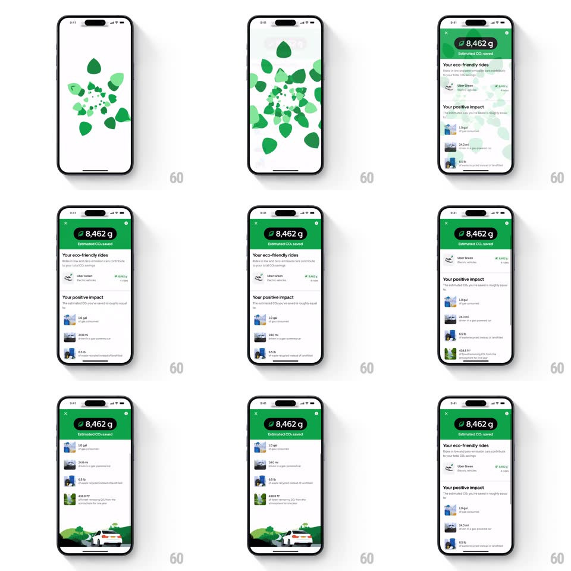

Media
Frame-by-frame

Rebuild this interaction 1:1: Uber Green's CO2 reveal - a vortex of green leaves swirls inward and dissolves into the eco-impact screen, which then scrolls vertically through your savings stats.

Rebuild this interaction 1:1: Uber Green's CO2 reveal - a vortex of green leaves swirls inward and dissolves into the eco-impact screen, which then scrolls vertically through your savings stats.
## Integration
Integration: stack-agnostic spec - springs given as stiffness/damping, timed motions as duration + curve; map every value to your framework and animation library of choice.
## Scene
A white screen erupts into a swirling tunnel of green leaves that spirals toward center and pulls the viewer through, landing on the impact screen: a green header with a black pill ("8,462 g Estimated CO2 saved"), "Your eco-friendly rides" rows (Uber Green with per-ride savings), and "Your positive impact" equivalence rows (gallons of gas, miles driven, pounds of coal) with small illustrations. Deep scroll ends on a wide illustration of a white car on green hills.
## Motion spec
Pattern: particle vortex transition into scrollable stats.
- The vortex: 60-80 leaves spawn at screen edges and spiral inward along tightening arcs (1.2s, each leaf scaling 1 to 0.3 as it approaches the vanishing point), with slight per-leaf rotation and staggered start (8ms apart) - the tunnel reads as depth, not a flat swirl.
- As the last leaves converge, the stats screen crossfades in (300ms) from the vortex's center point (scale 0.94 to 1), the header pill popping with a count-up of the grams (0 to 8,462, 900ms, ease-out).
- Scroll: the green header shrinks into a compact bar (height tween tied to scroll offset) while rows flow beneath; equivalence illustrations parallax slightly slower than their text rows (0.9x) for depth.
- Section headers ("Your eco-friendly rides", "Your positive impact") pin briefly then release with the scroll.
- The final car illustration rises with a gentle settle (spring ~300/20) the first time it enters the viewport.
## Calibration
- Leaves use 3-4 flat greens; no photoreal assets - the vortex is graphic, not organic-simulation.
- The count-up lands exactly on the pill's final value and never overshoots the digits.
## Reduced motion
Skip the vortex; fade directly into the stats screen with the count-up intact.
## Don't miss
- The vortex is a TRANSITION, not a looping background - it plays once and is gone.
- The black pill on the green header is the single strongest contrast on screen; keep it crisp.